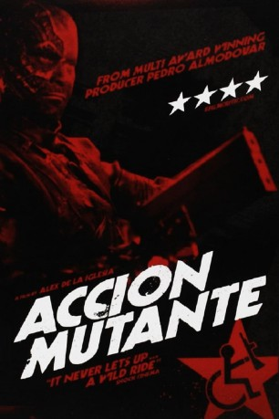
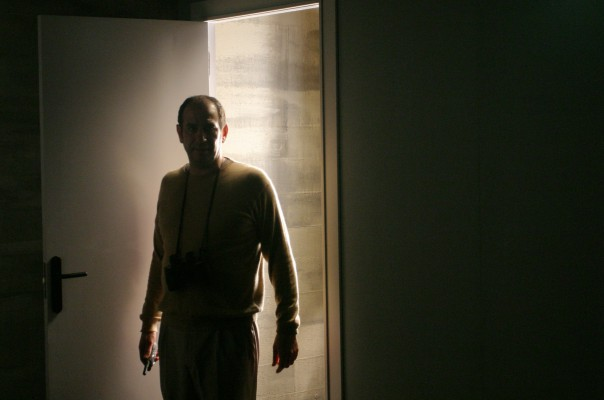

#9376 Aktion Mutante
 gesehen am 19.08.2018
gesehen am 19.08.2018
 
 IMDB-Wertung: 6.5 / 10
IMDB-Wertung: 6.5 / 10  Metascore: 0
Metascore: 0 
Sergeant Major Lynn Delaney ist eine kampferfahrende Secret Service Agentin. Als Marine hat sie am Golfkrieg teilgenommen und nun ist es ihre Aufgabe den Vizepräsidenten der vereinigten Staaten zu beschützen. Doch dieser Job ist alles andere als einfach. Das Flugzeug des Vizepräsidenten Walker, die Air Force 2 stürzt ab und zusammen mit dem Vizepräsidenten und zwei Journalisten findet sich Delaney auf einer abgelegenen Insel vor der südamerikanischen Küste wieder. Dumm nur, dass dies keine Insel mit friedlichen Bewohnern ist, vielmehr trainieren auf ihr bewaffnete Rebellen für eine Revolution und ihr Anführer befiehlt die Jagd auf die Überlebenden des Flugzeugabsturzes. Dabei gelingt es ihm den Vizepräsidenten als Geisel zu nehmen. Nur Major Lynn Delaney kann entkommen um nimmt in bester Einzelkämpfermanier dem Kampf um das Überleben des Vizepräsidenten auf.
Jahr: 1993
Dauer: 93 Minuten
FSK: 18
Land: Spanien Studio: VCL CommunicationsTonspuren: DD2.0 - ,
Untertitel: Englisch, ,
Auflösung: 1080p (1920x1080) Größe: 5416 MB
Genre: Sci-Fi, Komödie
Regisseur: Álex de la Iglesia
Drehbuch: Jorge Guerricaechevarría
Soundtrack: Def Con Dos
Darsteller:
- Antonio Resines als Ramón Yarritu
- Álex Angulo als Alex Abadie
- Frédérique Feder als Patricia Orujo
-  Karra Elejalde als José Óscar 'Manitas' Tellería
- Saturnino García als César 'Quimicefa' Ravenstein
- Fernando Guillén als El ominoso Orujo
- Jaime Blanch als El presentador loco
- Bibiana Fernández als Invitada de lujo
 Rossy de Palma als Invitada de lujo
Rossy de Palma als Invitada de lujo- Enrique San Francisco als Luis María de Ostolaza - El novio ultrajado
 Féodor Atkine als Kaufmann
Féodor Atkine als Kaufmann- Felipe García Vélez als García
 Ramón Barea als Anciano ciego
Ramón Barea als Anciano ciego Santiago Segura als Ezequiel
Santiago Segura als Ezequiel- Jimmy Barnatán als Niño anuncio 'Tripis' (uncredited)
- Juan Viadas als Juan Abadie
- Ion Gabella als Jos�� 'Chepa' Montero
- Francisco Maestre als El abuelo
- Alfonso Martínez als Amancio 'M.A.' Gonz��lez
- David Gil als Abraham
- Carlos Perea als Zacarías
- Pedro Luis Lavilla als Minero loco
- Kino Pueyo als Minero loco
- Pololo als Minero loco
- Miguel A. Chacón als Culturista
- Esther García als Presentadora T.V.
- Santiago Lajusticia als Invitado
- Arturo Arribas als (uncredited)
- José Luis Arrizabalaga als Minero en bar (uncredited)
- Biaffra als Minero en bar (uncredited)
Datei: X:\FSK18-1900-1999\Aktion Mutante (1993, FSK18, 1920x1080).mkv seit 17.08.2018
Festplatte: FSK18
 Es gibt insgesamt 108 Filme in der Gruppe 'FSK18-1900-1999'
Es gibt insgesamt 108 Filme in der Gruppe 'FSK18-1900-1999'